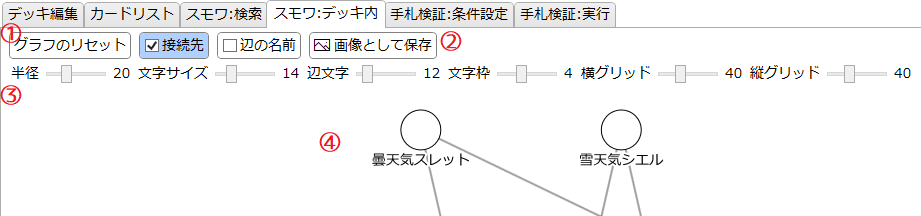
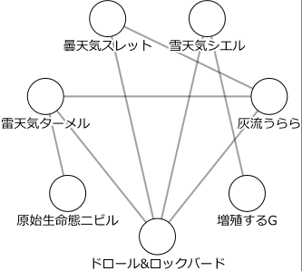
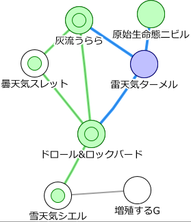
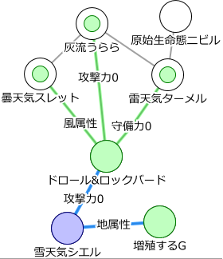

「スモワ:デッキ内」タブ
デッキ内のスモワ条件の関係をグラフとして可視化するためのタブです。
説明

グラフの操作

- グラフは、◯で表されるノード(頂点)と、線で表される辺からなります。
- 各ノードは、そのノードとスモワ条件を満たす別のノードと辺で繋がっています。
-
ノードと辺はマウスのドラッグにより移動できます。
- ノードをドラッグすることでノードを移動できます。
- 辺の中点をドラッグすることで、辺の形をある程度変えることができます。
- 辺の中点を右クリックすると、辺の形を初期化(折れ曲がっていない状態に)します。
- Ctrlキーを押しながらドラッグすることで、グリッドに合わせた移動が可能です。ついでにそのノードの座標も表示されます。
- ノードをクリックすることでそのノードを選択します。

-
選択中のノードは青く表示されます。
- これがスモワ始点となります。
-
選択中のノードに直接繋がっているノードは緑色になり、その接続されている辺は青くなります。
- これらがスモワの中継となります。
-
「接続先」にチェックが入っている場合、中継となるノードに直接繋がっているノードの内側に緑色の円が表示され、その接続されている辺が緑色になります。
- これらがスモワの終点となります。
-
この例では以下のような情報が分かります。
- 《雷天気ターメル》を始点とする繋がりを確認する。
-
《灰流うらら》と《ドロール&ロックバード》は緑色になり内側に円も表示されている。
- この2者は中継と終点のどちらにもなれる。
- すなわち、《スモール・ワールド》を使うことで、手札の《ターメル》はこの2者を経由してこの2者を含む各終点に変換できる。
-
《原始生命態ニビル》は緑色になっているが内側に円は表示されていない。
- このカードは《ターメル》を始点としたスモワの中継点にはなるが、《ターメル》からこのカード自身には変換できない。
-
《曇天気スレット》と《雪天気シエル》は内側に緑の円が表示されているのみである。
- この2者は《ターメル》から直接は繋がらないが、スモワの終点にはなれる。
- すなわち、《スモール・ワールド》を使うことで、手札の《ターメル》をこの2者のいずれかに変換できる。
-
《増殖するG》は色が変わっていないし、内側の円も表示されていない。
- このカードは《ターメル》を使ったスモワの中継にはなれないし、《ターメル》から変換することもできない。

-
「辺の名前」にチェックが入っている場合、青または緑になっている辺に、更に何が共通しているのかの情報が表示されます。
- これで具体的なスモワ条件が確認できます。